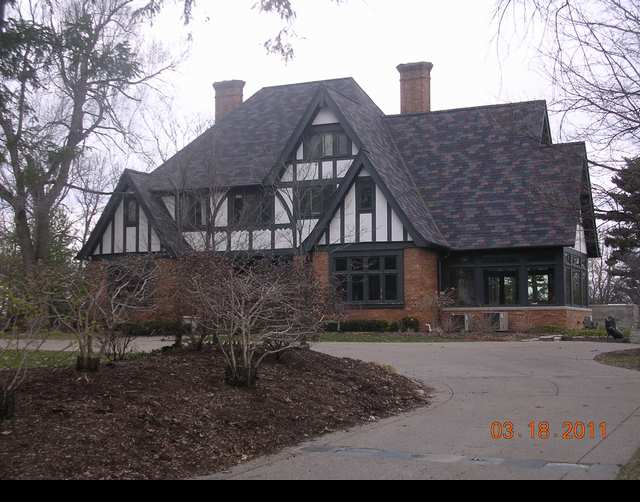

1320 E. Washington

- Frank W. and Frances Aldrich Residence (1902)
- Aldrich was a land owner, grain merchant, banker and naturalist of McLean area
- Built this when he was 29. Inherited from his father who was in the same business.
- The earliest English Arts and Crafts design house in the area
- Roman brick 1st story with faux half-timbering 2nd and attic story
- Enlarge for Dr. Lee by designs of Bob Edwards